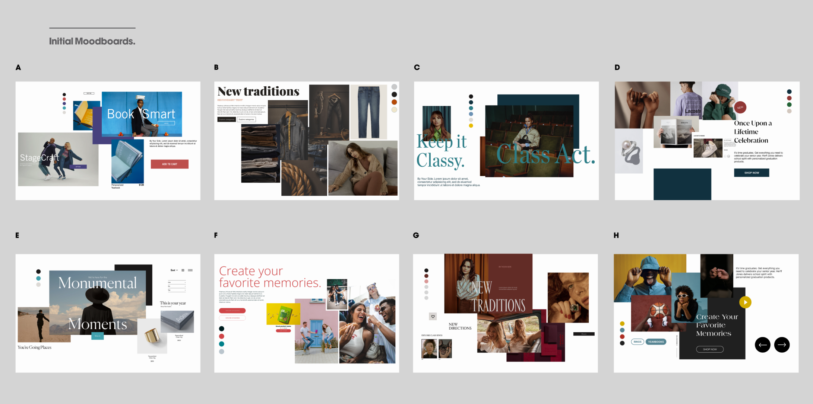
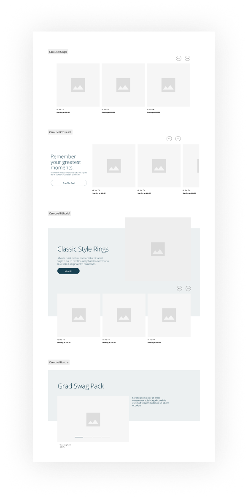
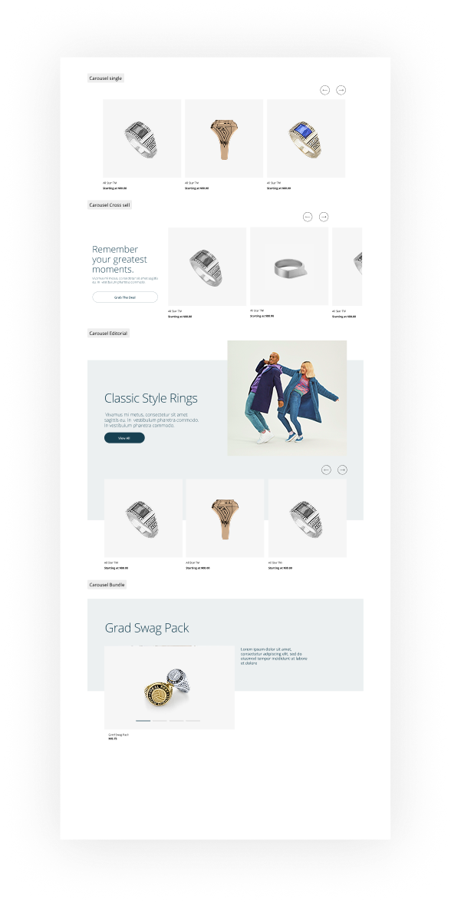
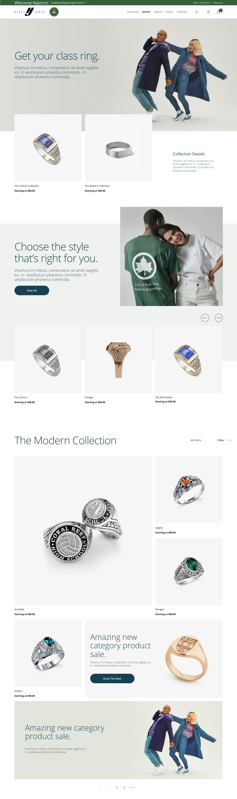
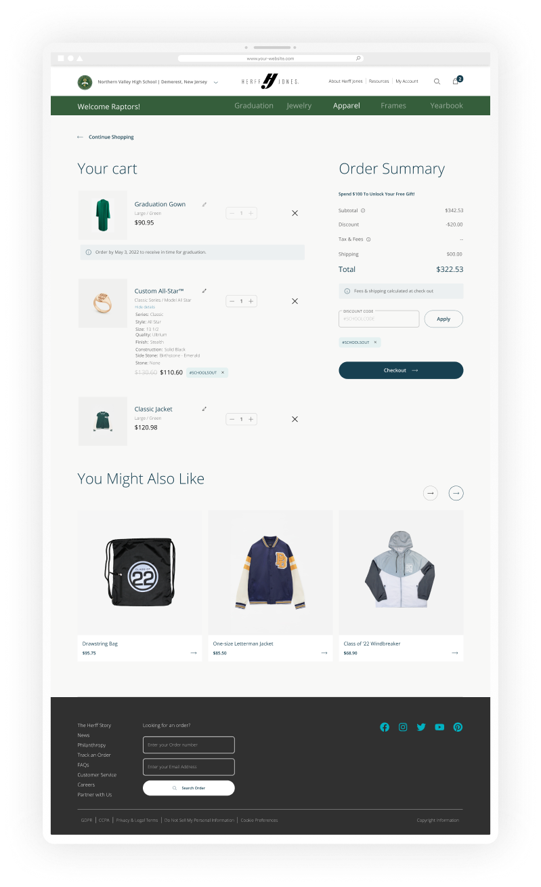
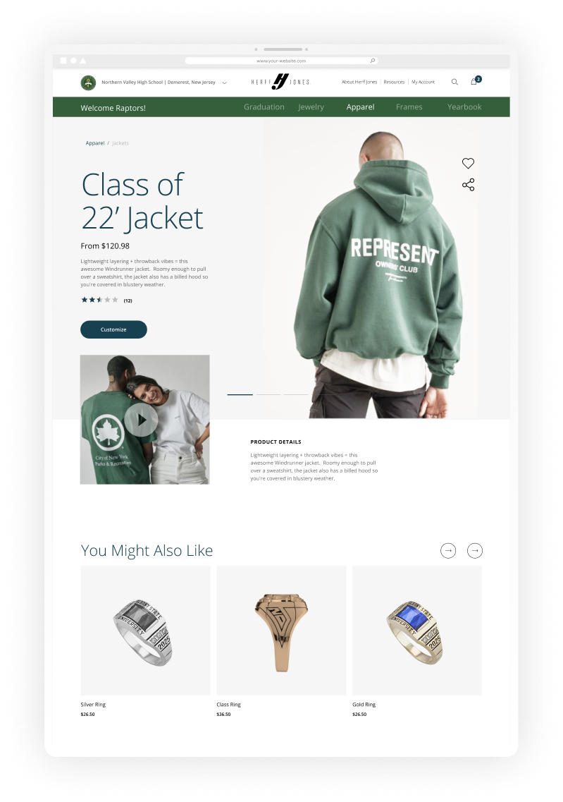

Herff Jones e-commerce.
A century-old American education brand needed an e-commerce experience that felt as considered as the products themselves. At Huge Inc, I worked on the foundations, components, templates, and motion of a complete redesign for Varsity Brands.
A heritage brand, a digital experience in need of repair.
Herff Jones has been in continuous operation since 1920, selling educational recognition and achievement products — class rings, yearbooks, graduation apparel — to American schools. The brand is woven into a hundred years of school traditions. The e-commerce experience, by 2022, wasn't carrying that weight gracefully.
Huge Inc was engaged by Varsity Brands to redesign and refresh the entire e-commerce experience. The brief was straightforward to state and difficult to execute: rebuild around clarity, unify the journey across school, product, and account, and bring the digital surface up to the standard of the brand itself.
Complex on the inside, incoherent on the outside.
The old version of the site was complex for the user, and the experience wasn't cohesive across pages, products, or brand moments. A customer arriving from a school landing page didn't feel like they were in the same product as one configuring a class ring.
The goals the team was measured against:
- Increase school sales — the business outcome the redesign needed to drive.
- Improve user satisfaction — the experience signal that would tell us the redesign worked.
Senior UI Designer on a team-led system.
I joined as Senior UI Designer on the Huge team building this work for Varsity Brands. To be honest about scope: this was a team project, not a solo one. My contribution sat in the UI craft layer — color and type foundations, components, and the page templates that carried them — in close collaboration with art direction, product, and the client.
The kind of project that teaches you to design inside a system: every component has to work for many futures, not just the one in front of you.
Align with the client before you build anything.
Before any UI work, the team presented multiple creative directions to the client to align on the visual language. The moodboards explored different brand temperatures — modern minimalism, editorial warmth, heritage-driven — looking for the register that fit a century of school spirit without feeling locked in time.
Moodboards aren't decoration. They're the cheapest, fastest contract between agency and client about where this is going. Skipping them is how you build the redesign of the redesign.

Initial moodboards — multiple creative directions for alignmentStructure first, then craft.
Wireframes set the structural decisions — what gets featured, where the eye lands, how filters and product details unfold. The UI then carried those decisions into the brand language: type hierarchy that reads, components that scan, spacing that breathes.


One system, every surface.
The redesign covered the full e-commerce flow — home, product listing, product detail, cart. Each template was built on the shared foundation so a customer moving from a school landing page to a class ring detail felt one coherent product, not five different sites stitched together.

The home — entry into a coherent system

Letting the client feel the experience.
For the client, a live prototype with motion demonstrated the full potential of the user experience — and let them visualize how the design would feel in action, not just how it looked in a static frame.
Movement reinforced the brand identity, smoothed transitions between sections, and made the experience memorable in a way static comps couldn't carry on their own.
Significant progress — without a final launch.
I'll say this plainly: the project was paused before launch. Herff Jones underwent a restructuring that led to the cancellation of the work. The final, shipped version of this redesign never reached customers.
What we did complete was well received by the client. The team saw their excitement at the direction, and the positive feedback reaffirmed the approach — even though the project didn't reach launch, the craft and the process are what I take forward.
What I carry forward
- Designing inside a system. Every component had to work for many futures, not just the one screen in front of me. That muscle now shows up in every product I touch.
- Aligning early with moodboards. Presenting creative directions to the client before any UI is built is how you avoid redesigning the redesign.
- The most useful artifact wasn't a screen. It was the foundations doc that let a distributed team build the same product.